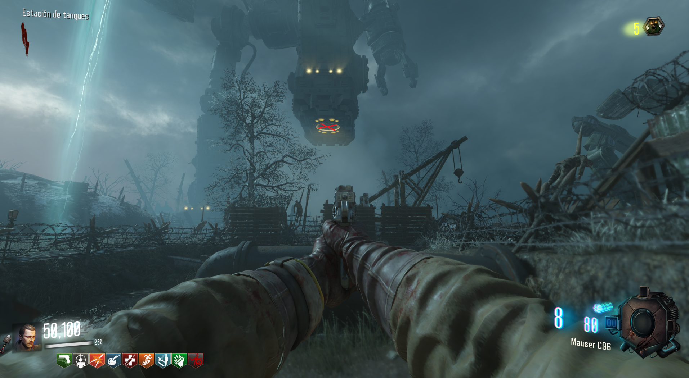
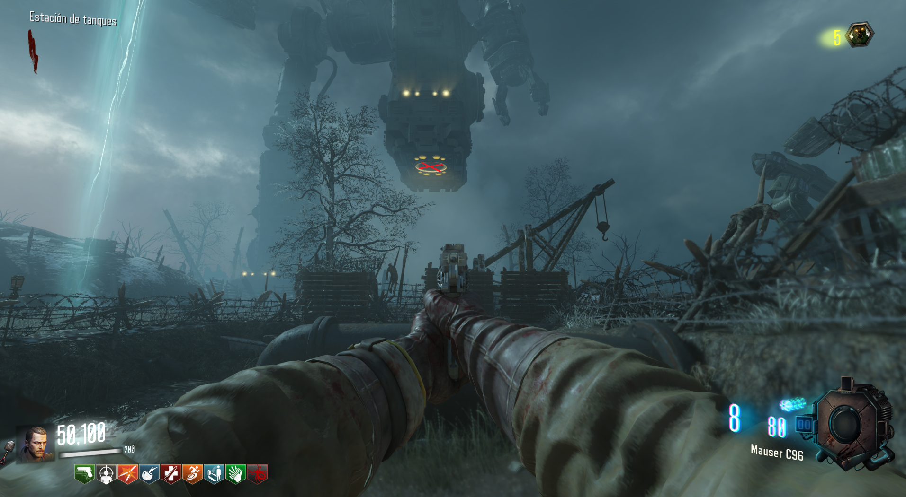

Bastón de Viento (Origins)
Para conseguir el bastón de viento, deberemos de conseguir sus tres piezas.
Para ello necesitaremos entrar en los tres gigantes:
Dispararemos al círculo amarillo bajo el pie del gigante para que la compuerta se abra y podamos entrar.

Encontraremos las piezas en cada uno de los gigantes
Cuando tengamos las tres piezas, iremos con el gramófono (se encuentra en la zona de excavación), a la mina de viento cerca del Generador 4.
Bajaremos por la mina y colocaremos el gramófono para que el portal aparezca.
Después iremos a nuestro pedestal correspondiente y obtendremos la piedra de viento.
Finalmente iremos a la zona de excavación y construiremos el bastón.

Para ello necesitaremos entrar en los tres gigantes:
Dispararemos al círculo amarillo bajo el pie del gigante para que la compuerta se abra y podamos entrar.

Encontraremos las piezas en cada uno de los gigantes
Cuando tengamos las tres piezas, iremos con el gramófono (se encuentra en la zona de excavación), a la mina de viento cerca del Generador 4.
Bajaremos por la mina y colocaremos el gramófono para que el portal aparezca.
Después iremos a nuestro pedestal correspondiente y obtendremos la piedra de viento.
Finalmente iremos a la zona de excavación y construiremos el bastón.